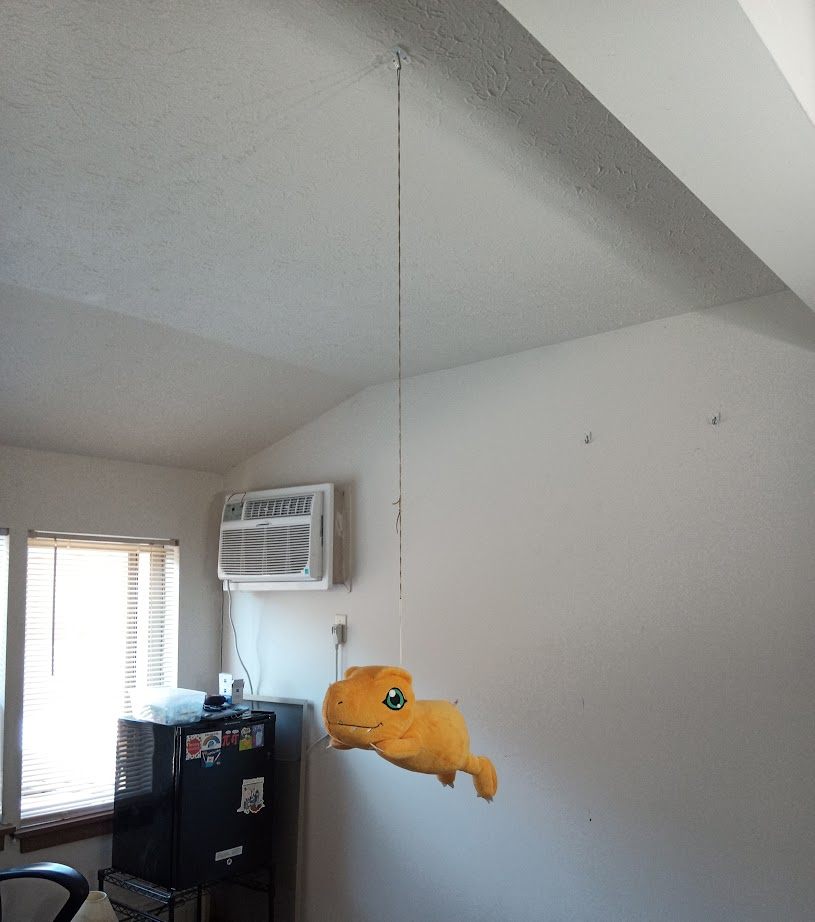
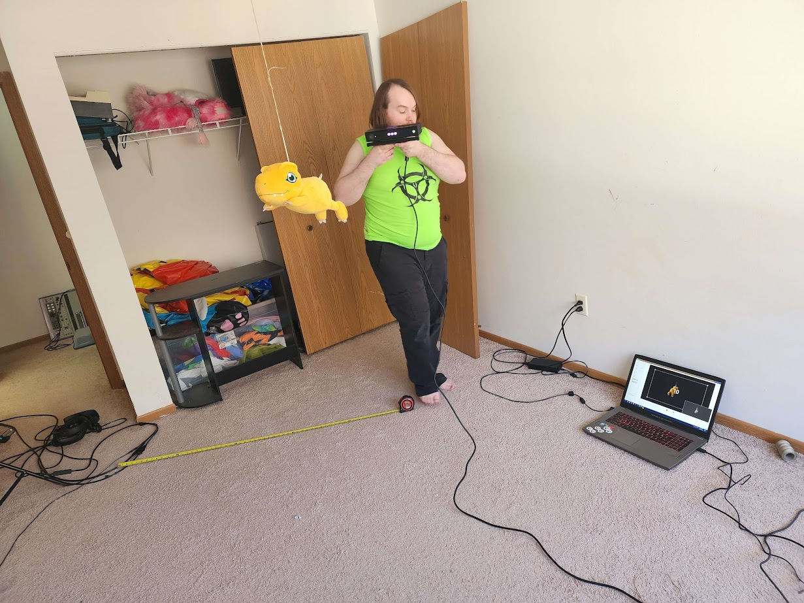
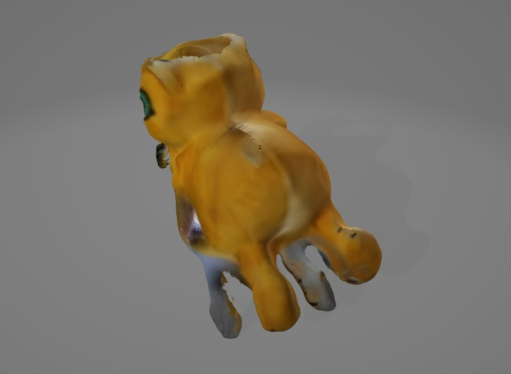
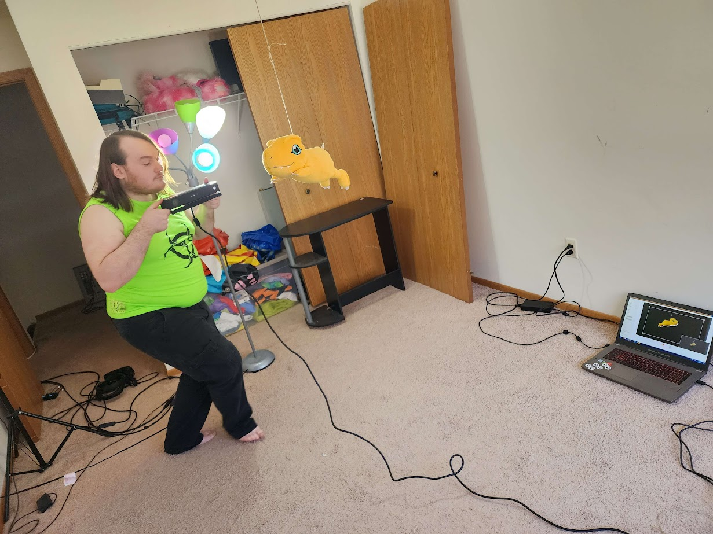
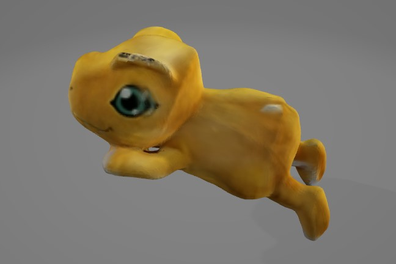
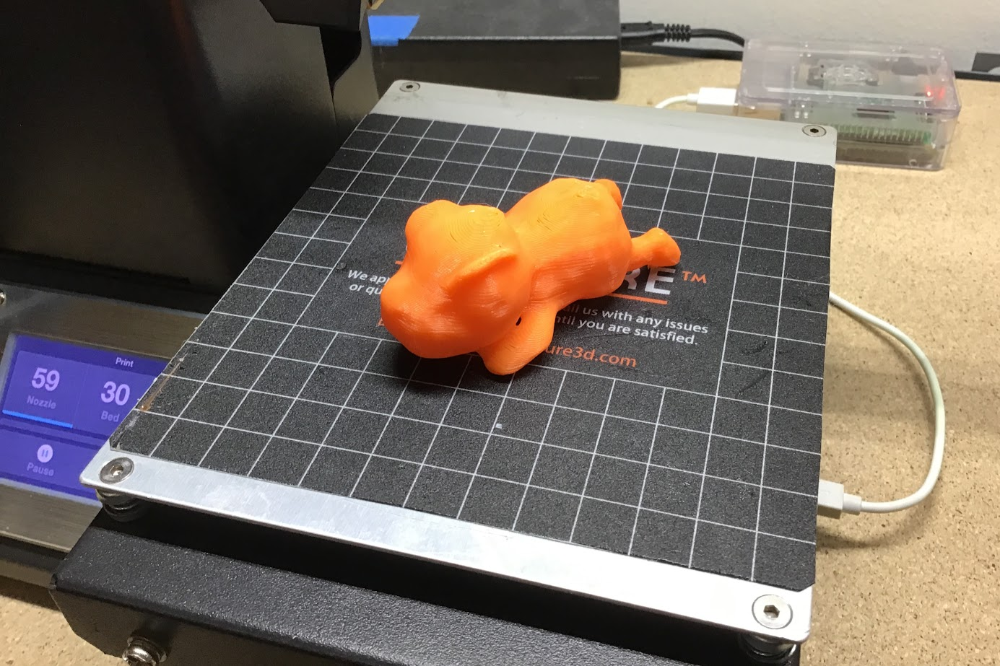
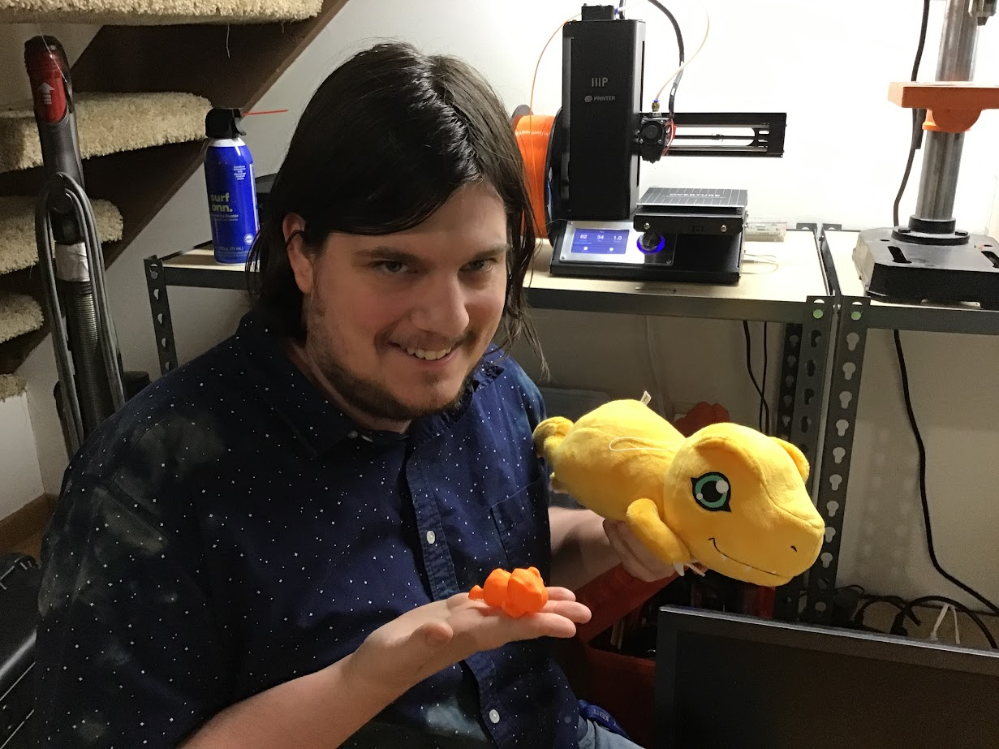

while hanging out a couple weeks ago, my friend Vensolin the Unjust and i decided to 3d scan augi, his adorable plush agumon. in order to make a complete scan of augi, we would need to hang him from the ceiling somehow so that all sides of him would be visible. fortunately, he already has a loop of string attached to the back of his head (i guess so you can hang him off of something?), so i stuck a command strip hook to the ceiling and hung him off of it with a long piece of twine.
i used an xbox one kinect and the microsoft 3d scan software to do this. i first tried carefully walking around him while keeping the kinect pointed at him. (notice the tape measure placed exactly where i would trip over it.)
it quickly became apparent that he wasn't being evenly lit, so the software had a hard time figuring out how to stitch the scans together. most of my efforts resulted in terrible, washed-out colors and freakish model glitches, like the time poor augi ended up with four back legs:
next we tried to light him more evenly, hoping that would help improve the scan quality. i grabbed all the various lamps i could find in my apartment (including our phone flashlights) and pointed them at augi in various configurations. we were getting closer, but the scans still weren't perfect. i was also tripping over the kinect cable at least three times per scan, which wasn't helping the capture quality any.
finally, i noticed that the string augi was hanging from was a bit twisted up, causing him to spin around slowly. i had a revelation - what if i just twisted up the string on purpose so that he'd spin in place for longer? then i could just hold the kinect steady and slowly pan it up and down to capture all sides of him. (no more having to walk around while awkwardly aiming the kinect and tripping over the cable!)
this was a success! we still never got a perfect scan of him, but it ended up much better than before. even though the texture was still pretty messed up (he has 3 nostrils and some real funky eyes), the actual geometry was pretty much perfect - or at least as perfect as one could hope from a kinect scan.
download him for your own nefarious purposes: >>> augi.glb <<<
now that we have a digital representation of augi, we can make a physical copy of him with the power of 3d printing! (since he's a digimon, i guess it's actually a physical recreation of a digital representation of a physical representation of a digital creature?)
the closest color of filament i have to agumon yellow is orange, so i loaded that into my printer and sent over the 3d model. it turned out pretty good! i'll need to tweak my support settings a bit before i try printing him again though, as one of his feets wasn't fully attached to his leg.
"don't 3d print me or my son ever again"
